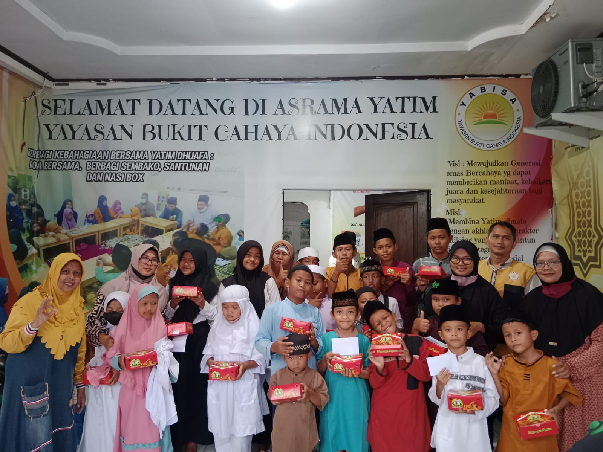
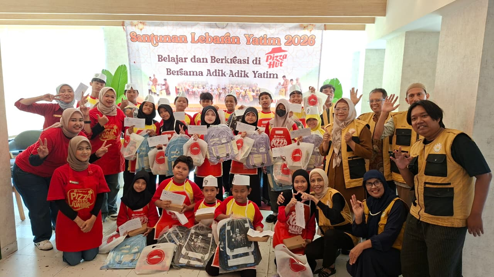
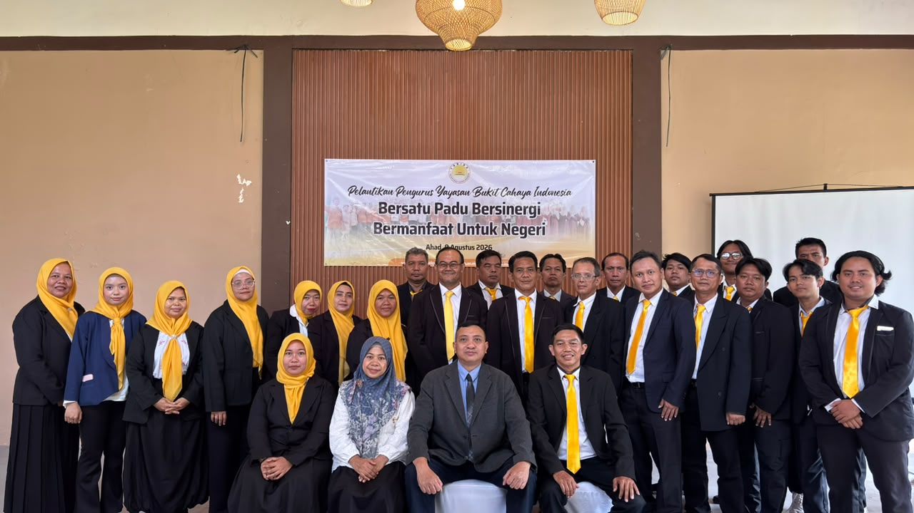
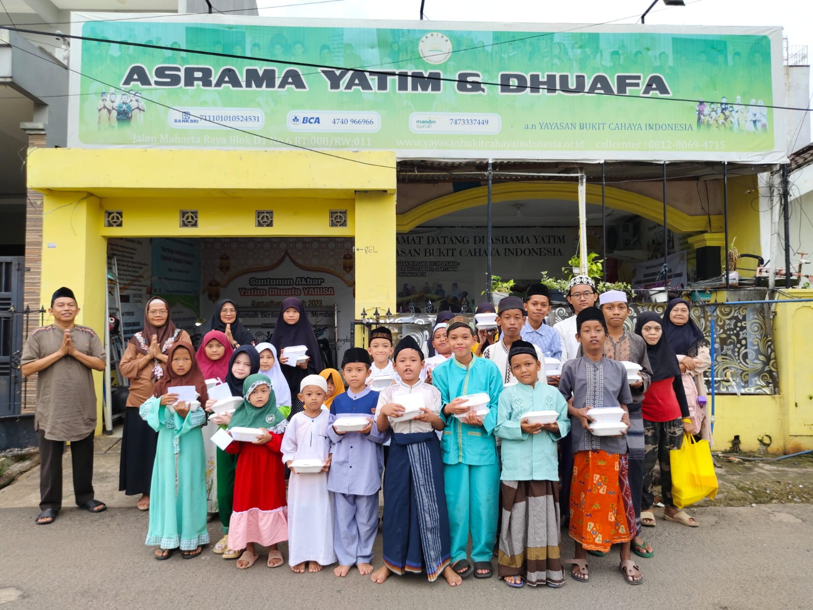

YABISA21 Juli 2026
Mengapa Pembinaan Anak Yatim Perlu Berkelanjutan?
Bantuan terbaik tidak hanya hadir sesaat, tetapi ikut membangun karakter, pendidikan, dan kemandirian anak.
Baca SelengkapnyaRuang publikasi artikel, edukasi kebaikan, dan cerita kegiatan Yayasan Bukit Cahaya Indonesia.
Artikel dibuat dengan gaya singkat, hangat, dan mudah dipahami pengunjung.

Bantuan terbaik tidak hanya hadir sesaat, tetapi ikut membangun karakter, pendidikan, dan kemandirian anak.
Baca SelengkapnyaKebutuhan pangan yang terpenuhi dapat membantu keluarga menjaga kesehatan dan ketenangan hidup sehari-hari.
Baca Selengkapnya
Program rutin membantu membangun kebiasaan berbagi yang tertib, dekat, dan menyentuh kebutuhan nyata.
Baca SelengkapnyaWakaf mushaf mendukung pembelajaran Al-Qur'an dan menjadi sarana ibadah yang terus memberi manfaat.
Baca Selengkapnya
Relawan membantu yayasan hadir lebih dekat, lebih cepat, dan lebih hangat kepada masyarakat.
Baca Selengkapnya
Asrama permanen diharapkan menjadi pusat pembinaan yang aman, nyaman, dan mendukung masa depan anak.
Baca SelengkapnyaUntuk donasi dan konfirmasi, hubungi WhatsApp resmi yayasan.
Hubungi WhatsApp